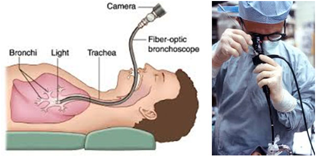
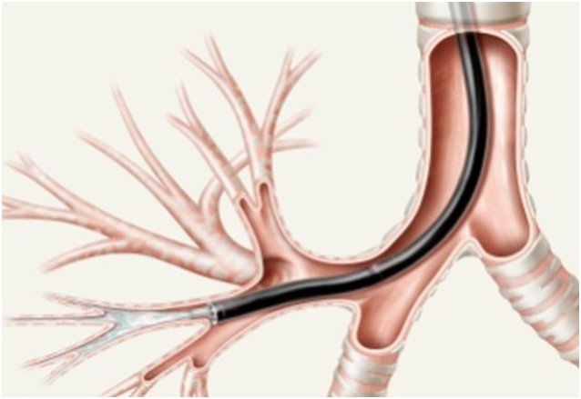
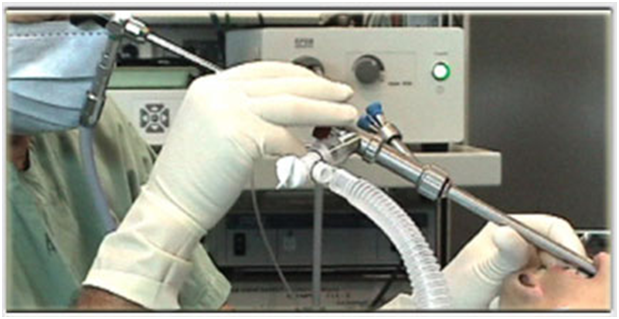
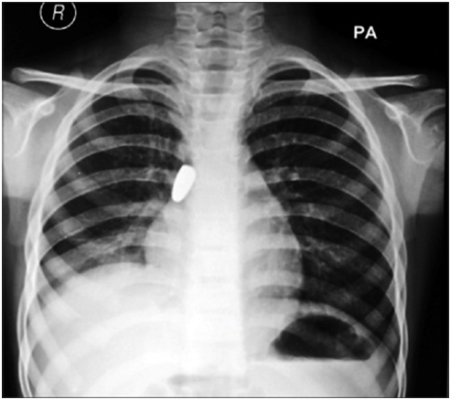
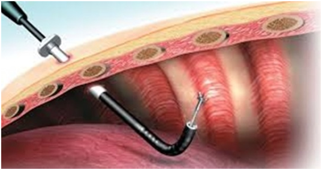
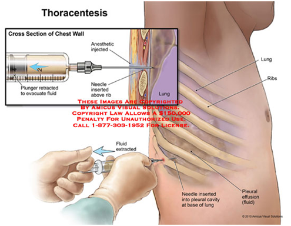
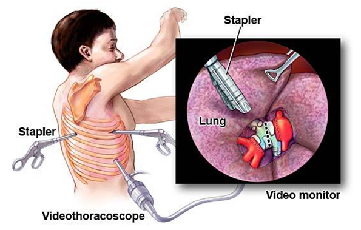
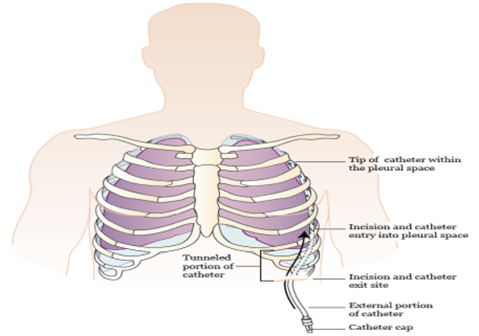
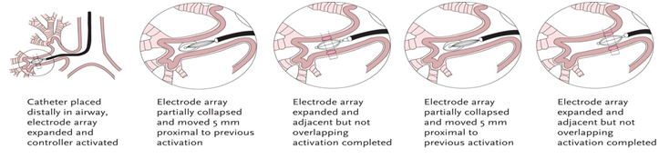

Interventional Pulmonology Procedures
Flexible Bronchoscopy

Bronchoscopy is the most common interventional pulmonology procedure. During bronchoscopy, a doctor advances a flexible endoscope (bronchoscope) through a person's mouth or nose into the windpipe. The doctor advances the bronchoscope through the airways in each lung, checking for problems. Images from inside the lung are displayed on a video screen.
The bronchoscope has a channel at its tip, through which a doctor can pass small tools. Using these tools, the doctor can perform several other interventional pulmonology procedures.
Bronchoalveolar Lavage
 Bronchoalveolar lavage is performed during bronchoscopy. Sterile water is injected through the bronchoscope into a segment of the lung. The fluid is then suctioned back and sent for tests. Bronchoalveolar lavage can help diagnose infection, cancer, bleeding, and other conditions.
Biopsy Of Lung Or Lymph Node
 During bronchoscopy, a doctor may collect a small piece of tissue from either the lung or a nearby lymph node. The interventional pulmonologist can use a needle or forceps advanced through the bronchoscope to get a sample of tissue. Biopsies can detect cancer, infection, sarcoidosis, and other conditions.
During bronchoscopy, a doctor may collect a small piece of tissue from either the lung or a nearby lymph node. The interventional pulmonologist can use a needle or forceps advanced through the bronchoscope to get a sample of tissue. Biopsies can detect cancer, infection, sarcoidosis, and other conditions.
For people with lung cancer or other cancers, interventional pulmonology biopsies can often accurately identify spread of cancer into lymph nodes. This can prevent unnecessary surgery or help determine the best choice for treatment.
Airway Stent (bronchial stent)
.png) Advanced cancer or certain other conditions can constrict or compress an airway tube (bronchus). If the bronchus becomes blocked, difficulty breathing, cough, and pneumonia can result.
Advanced cancer or certain other conditions can constrict or compress an airway tube (bronchus). If the bronchus becomes blocked, difficulty breathing, cough, and pneumonia can result.
Using a bronchoscope, a doctor can advance a wire mesh stent into a narrowed airway. Expanding the stent can open a bronchus and relieve symptoms caused by the constriction.
Balloon Bronchoplasty
 A doctor advances a deflated balloon into a section of abnormally narrowed airway. By inflating the balloon with water, the airway is expanded, potentially relieving symptoms. Balloon bronchoplasty may be performed prior to airway stent placement to help expand a bronchus.
A doctor advances a deflated balloon into a section of abnormally narrowed airway. By inflating the balloon with water, the airway is expanded, potentially relieving symptoms. Balloon bronchoplasty may be performed prior to airway stent placement to help expand a bronchus.
Rigid Bronchoscopy
In rigid bronchoscopy, a long metal tube (rigid bronchoscope) is advanced into a person’s windpipe and main airways. The rigid bronchoscope’s large diameter allows the doctor to use more sophisticated surgical tools and techniques. Rigid bronchoscopy requires general anesthesia (unconsciousness with assisted breathing), similar to a surgical procedure.
Foreign Body Removal
Bronchoscopy is the preferred interventional pulmonology procedure to remove inhaled foreign objects that are lodged in an airway. A doctor may be able to remove the object using flexible bronchoscopy, or rigid bronchoscopy may be required.
Pleuroscopy
A doctor cuts small incisions in the chest wall and advances a pleuroscope (a type of endoscope) into the chest cavity. The pleuroscope is advanced around the chest wall and lung on one side. Pleuroscopy can diagnose some conditions of the pleura (lining of the lung). Pleuroscopy also allows a view of the outside edges of the lung, which bronchoscopy cannot provide.
Thoracentesis
To drain fluid from around the lungs (pleural effusion), a doctor inserts a needle into the chest wall. A plastic catheter is advanced over the needle, which is then removed. The excess pleural fluid is suctioned out of the chest and the catheter is removed and discarded.
Pleurodesis
Pleurodesis is an interventional pulmonology procedure performed for people with recurring pleural effusions (fluid around the lungs). In pleurodesis, a doctor makes an incision in the chest wall. A plastic tube is inserted into the chest cavity, and an irritating chemical is sprayed around the lung. Over time, the inflamed lung lining (pleura) adheres tightly to the chest wall. This prevents fluid from reaccumulating around the lung.
Indwelling Pleural Catheter
A pleural catheter is an alternative to pleurodesis for treatment of a recurrent pleural effusion. Through minor surgery, a plastic catheter is tunneled beneath the skin, with its tip placed inside the chest cavity. As pleural fluid accumulates around the lung, a person can drain the indwelling pleural catheter at home, using special sterile supplies.
Bronchoscopic Thermoplasty
 Thermoplasty is an interventional pulmonology procedure for certain people with severe asthma that can’t be controlled with medications. During bronchoscopy, a doctor applies a heat probe to the walls of the airways. The heat destroys the smooth muscle layers whose constriction contributes to asthma symptoms.